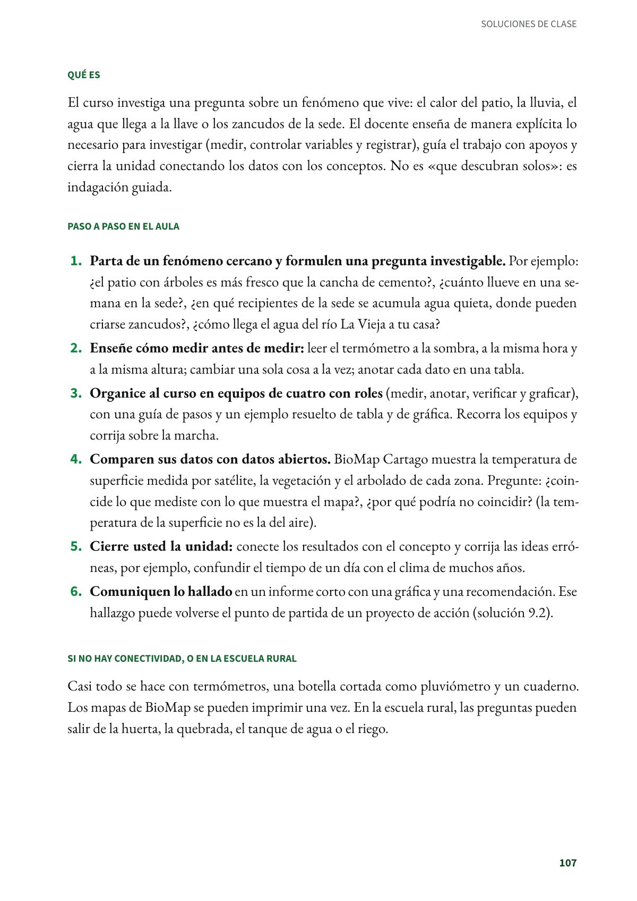
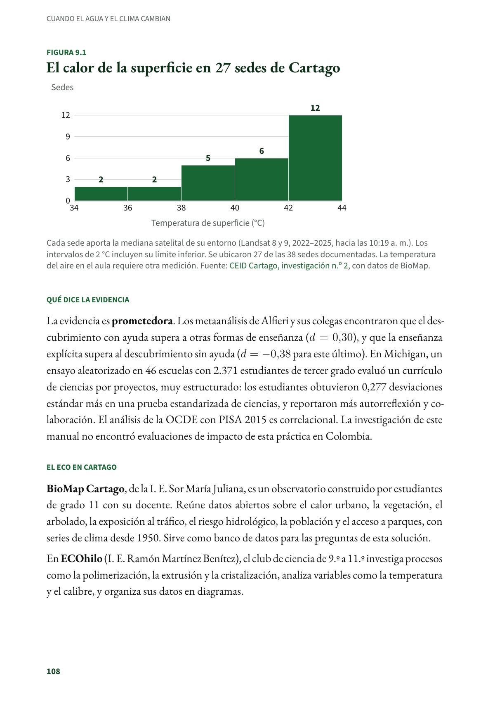
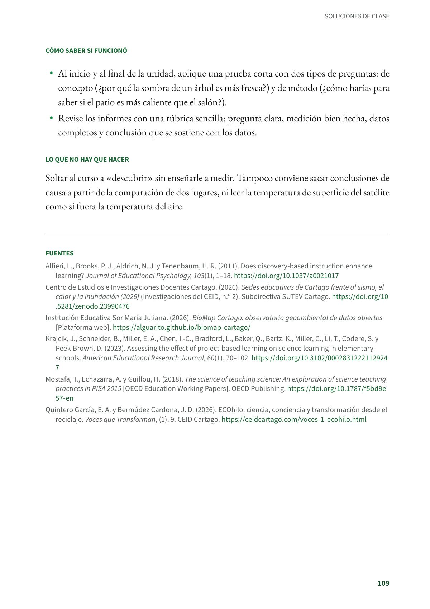

Investigar el agua y el calor de Cartago con datos: la indagación científica guiada
El curso investiga una pregunta sobre un fenómeno que vive. De 4.º a 11.º, en ciencias naturales, con apoyo de matemáticas y tecnología. Evidencia prometedora.
PDF · 5 págs. · 100 KBEn resumen
- Evidencia: prometedora.
- Para quién: De 4.º a 11.º, en ciencias naturales, con apoyo de matemáticas y tecnología.
- Tiempo: Una unidad de tres a cuatro semanas. Las mediciones toman unos 10 minutos al día.
- Materiales: Termómetros, un pluviómetro hecho con una botella, cinta métrica y un cuaderno de datos. Si hay conexión, BioMap Cartago.
- De dónde viene: Metaanálisis sobre el descubrimiento guiado (Alfieri et al., 2011), análisis de PISA 2015 (OCDE) y el ensayo de ciencias por proyectos ML-PBL en Michigan (Estados Unidos).
Qué es
El curso investiga una pregunta sobre un fenómeno que vive: el calor del patio, la lluvia, el agua que llega a la llave o los zancudos de la sede. El docente enseña de manera explícita lo necesario para investigar (medir, controlar variables y registrar), guía el trabajo con apoyos y cierra la unidad conectando los datos con los conceptos. No es «que descubran solos»: es indagación guiada.
Paso a paso en el aula
- Parta de un fenómeno cercano y formulen una pregunta investigable. Por ejemplo: ¿el patio con árboles es más fresco que la cancha de cemento?, ¿cuánto llueve en una semana en la sede?, ¿en qué recipientes de la sede se acumula agua quieta, donde pueden criarse zancudos?, ¿cómo llega el agua del río La Vieja a tu casa?
- Enseñe cómo medir antes de medir: leer el termómetro a la sombra, a la misma hora y a la misma altura; cambiar una sola cosa a la vez; anotar cada dato en una tabla.
- Organice al curso en equipos de cuatro con roles (medir, anotar, verificar y graficar), con una guía de pasos y un ejemplo resuelto de tabla y de gráfica. Recorra los equipos y corrija sobre la marcha.
- Comparen sus datos con datos abiertos. BioMap Cartago muestra la temperatura de superficie medida por satélite, la vegetación y el arbolado de cada zona. Pregunte: ¿coincide lo que mediste con lo que muestra el mapa?, ¿por qué podría no coincidir? (la temperatura de la superficie no es la del aire).
- Cierre usted la unidad: conecte los resultados con el concepto y corrija las ideas erróneas, por ejemplo, confundir el tiempo de un día con el clima de muchos años.
- Comuniquen lo hallado en un informe corto con una gráfica y una recomendación. Ese hallazgo puede volverse el punto de partida de un proyecto de acción (solución 9.2).
Si no hay conectividad, o en la escuela rural
Casi todo se hace con termómetros, una botella cortada como pluviómetro y un cuaderno. Los mapas de BioMap se pueden imprimir una vez. En la escuela rural, las preguntas pueden salir de la huerta, la quebrada, el tanque de agua o el riego.
Qué dice la evidencia
La evidencia es prometedora. Los metaanálisis de Alfieri y sus colegas encontraron que el descubrimiento con ayuda supera a otras formas de enseñanza ($d = 0,30$), y que la enseñanza explícita supera al descubrimiento sin ayuda ($d = -0,38$ para este último). En Michigan, un ensayo aleatorizado en 46 escuelas con 2.371 estudiantes de tercer grado evaluó un currículo de ciencias por proyectos, muy estructurado: los estudiantes obtuvieron 0,277 desviaciones estándar más en una prueba estandarizada de ciencias, y reportaron más autorreflexión y colaboración. El análisis de la OCDE con PISA 2015 es correlacional. La investigación de este manual no encontró evaluaciones de impacto de esta práctica en Colombia.
El eco en Cartago
BioMap Cartago, de la I. E. Sor María Juliana, es un observatorio construido por estudiantes de grado 11 con su docente. Reúne datos abiertos sobre el calor urbano, la vegetación, el arbolado, la exposición al tráfico, el riesgo hidrológico, la población y el acceso a parques, con series de clima desde 1950. Sirve como banco de datos para las preguntas de esta solución.
En ECOhilo (I. E. Ramón Martínez Benítez), el club de ciencia de 9.º a 11.º investiga procesos como la polimerización, la extrusión y la cristalización, analiza variables como la temperatura y el calibre, y organiza sus datos en diagramas.
Cómo saber si funcionó
- Al inicio y al final de la unidad, aplique una prueba corta con dos tipos de preguntas: de concepto (¿por qué la sombra de un árbol es más fresca?) y de método (¿cómo harías para saber si el patio es más caliente que el salón?).
- Revise los informes con una rúbrica sencilla: pregunta clara, medición bien hecha, datos completos y conclusión que se sostiene con los datos.
Lo que no hay que hacer
Soltar al curso a «descubrir» sin enseñarle a medir. Tampoco conviene sacar conclusiones de causa a partir de la comparación de dos lugares, ni leer la temperatura de superficie del satélite como si fuera la temperatura del aire.
Fuentes
Alfieri, L., Brooks, P. J., Aldrich, N. J. y Tenenbaum, H. R. (2011). Does discovery-based instruction enhance learning? Journal of Educational Psychology, 103(1), 1–18. doi.org
Centro de Estudios e Investigaciones Docentes Cartago. (2026). Sedes educativas de Cartago frente al sismo, el calor y la inundación (2026) (Investigaciones del CEID, n.º 2). Subdirectiva SUTEV Cartago. doi.org
Institución Educativa Sor María Juliana. (2026). BioMap Cartago: observatorio geoambiental de datos abiertos [Plataforma web]. alguarito.github.io
Krajcik, J., Schneider, B., Miller, E. A., Chen, I.-C., Bradford, L., Baker, Q., Bartz, K., Miller, C., Li, T., Codere, S. y Peek-Brown, D. (2023). Assessing the effect of project-based learning on science learning in elementary schools. American Educational Research Journal, 60(1), 70–102. doi.org
Mostafa, T., Echazarra, A. y Guillou, H. (2018). The science of teaching science: An exploration of science teaching practices in PISA 2015 [OECD Education Working Papers]. OECD Publishing. doi.org
Quintero García, E. A. y Bermúdez Cardona, J. D. (2026). ECOhilo: ciencia, conciencia y transformación desde el reciclaje. Voces que Transforman, (1), 9. CEID Cartago. ceidcartago.com
Así se ve en el libro
5 páginas


